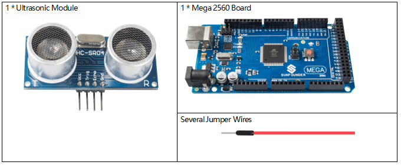
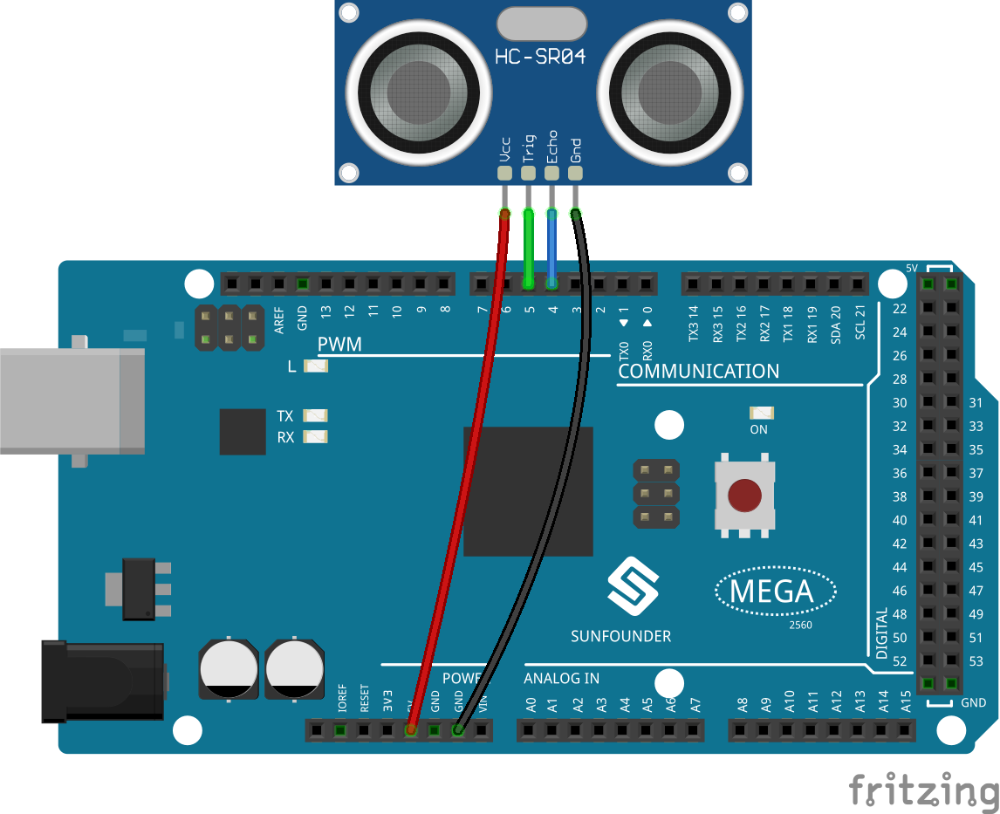
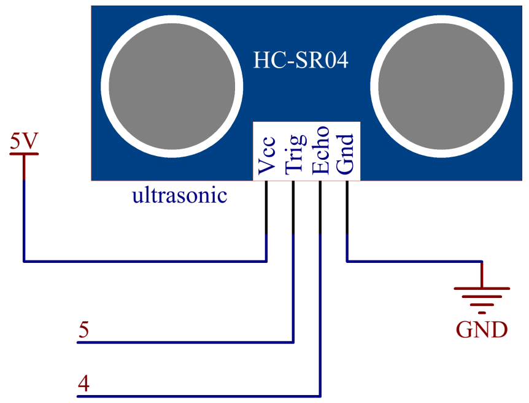

2.33 Ultraschallmodul¶
Überblick¶
In dieser Lektion lernen Sie, wie Sie das Ultraschallmodul verwenden.
Erforderliche Komponenten¶
Komponenteneinführung¶

Das Ultraschall-Entfernungsmessmodul bietet eine berührungslose Messfunktion von 2 cm bis 400 cm. Das Arbeitsprinzip ist, dass beim Versenden von Befehlen durch die MPU der Keramikchip zu vibrieren beginnt und das Aluminiumgehäuse zusammen mit ihm vibriert, um eine Ultraschallwelle zu bilden und die Welle zur Rückseite des Autos zu senden. Nachdem die ausgesendete Ultraschallwelle ein Hindernis getroffen hat, tritt eine Echowelle auf. Diese Echowelle wird von demselben Aluminiumgehäuse und dem Keramikchip in Form von Vibrationen empfangen. Die MPU beurteilt die Position des Hindernisses durch Berechnung der Zeitdifferenz und der Azimutdifferenz der Echowelle. Ultraschall-Abstandssensoren können in großem Umfang bei der Überwachung des Materialstands (Flüssigkeitsstand), der Vermeidung von Roboterkollisionen, verschiedenen Ultraschall-Näherungsschaltern und Einbruchalarmen eingesetzt werden.
Das Modul enthält Ultraschallsender, Empfänger und Steuerschaltung. Die Grundprinzipien sind wie folgt:
1.Use an IO flip-flop to process a high level signal of at least 10us;
2.The module automatically sends eight 40khz and detects if there is a pulse signal return.
3.If the signal returns, passing the high level, the high output IO duration is the time from the transmission of the ultrasonic wave to the return of it. Here, test distance = (high time x sound speed (340 m / s) / 2.
TRIG |
Impulseingang auslösen |
GND |
Ground |
ECHO |
Echoimpulsausgang |
VCC |
Liefern |
Das Zeitdiagramm ist unten dargestellt. Sie brauchen nur einen kurzen Impuls von 10us an den Triggereingang senden, um die Entfernungsmessung zu starten. Anschließend sendet das Modul einen 8-Perioden-Ultraschallimpuls mit einer Frequenz von 40 kHz und erhöht sein Echo. Sie können den Bereich über das Zeitintervall zwischen dem Senden des Triggersignals und dem Empfangen des Echosignals berechnen.
Formel: us / 58 = Zentimeter oder us / 148 = Zoll; oder: der Bereich = hohe Pegelzeit * Geschwindigkeit (340 M / S) / 2; Es wird empfohlen, einen Messzyklus über 60 ms zu verwenden, um Signalkollisionen des Triggersignals und des Echosignals zu vermeiden.

Fritzing Circuit¶
In diesem Beispiel verbinden wir die Stifte des Ultraschallmoduls direkt mit den Stiften der Mega 2560-Platine. Und dann erhalten wir VCC des Ultraschallmoduls, das an 5 V angeschlossen ist, GND an GND, Trig an den digitalen Pin 5, Echo an den digitalen Pin 4.
{kind=link}
Schematische Darstellung¶
{kind=link}
Code¶
Nach dem Hochladen der Codes auf die Mega2560-Karte zeigt der serielle Monitor die Entfernung der Hindernisse an, die der Ultraschallsensor erkannt hat.
Code-Analyse¶
Über die Anwendung des Ultraschallsensors können wir die Unterfunktion direkt überprüfen.
float readSensorData(){// ...}
PING wird durch einen HIGH-Impuls von 2 oder mehr Mikrosekunden ausgelöst. (Geben Sie vorher einen kurzen LOW-Impuls, um einen sauberen HIGH-Impuls zu gewährleisten.)
digitalWrite(trigPin, LOW);
delayMicroseconds(2);
digitalWrite(trigPin, HIGH);
delayMicroseconds(10);
digitalWrite(trigPin, LOW);
Der Echo-Pin wird zum Lesen des Signals von PING verwendet, einem HIGH-Impuls, dessen Dauer die Zeit (in Mikrosekunden) vom Senden des Pings bis zum Empfang des Echos des Objekts ist.
microsecond=pulseIn(echoPin, HIGH);
Die Schallgeschwindigkeit beträgt 340 m / s oder 29 Mikrosekunden pro Zentimeter.
Dies gibt die vom Ping zurückgelegte Strecke an, ausgehend und zurück, also teilen wir durch 2, um die Entfernung des Hindernisses zu erhalten.
float distance = microsecond / 29.00 / 2;
{kind=link}